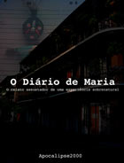

Agora você pode ler um dos contos mais assustadores do Apocalipse2000 no seu leitor de ePUB. O Diário de Maria foi revisado e está mais assustador ainda. Acompanhe Maria e suas amigas em uma aventura assustadora por New Orleans.
Faça o download do ePub »